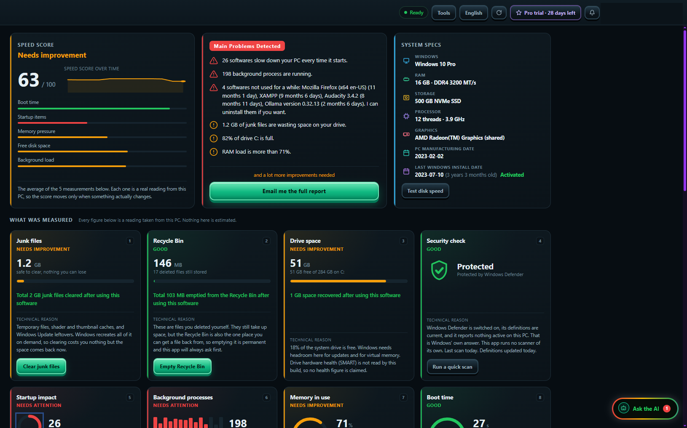
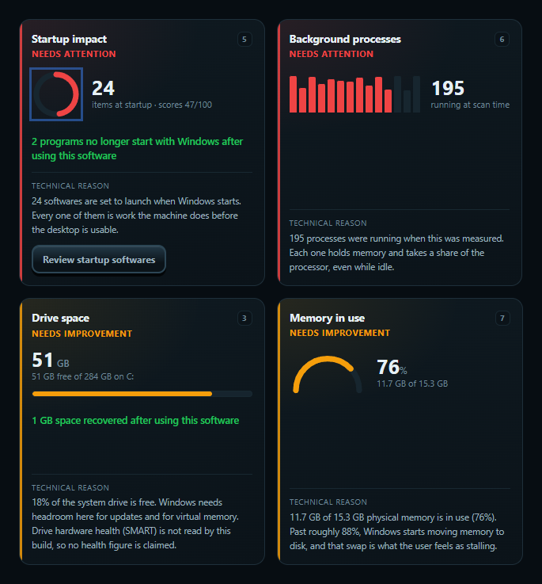
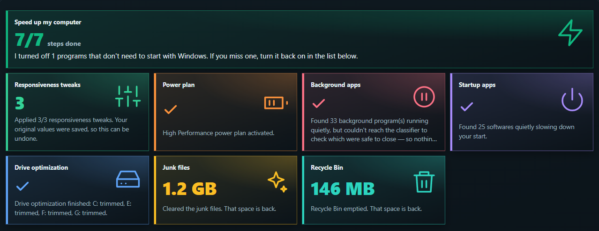

PC slow? Errors? Hassle to use? Something not working ? Let AI run one deep scan
Our AI fixes in minutes that servicing center takes many hours.

One deep scan. Every problem found.
This data is from real customer's PC. not AI generated content !
Found on a real PC
- Needs attention: 26 programs slow down your PC every time it starts
- Needs attention: 198 programs running in the background
- Needs improvement: 82% of drive C: is full
- Needs improvement: 12.2 GB of junk files
63 / 100
Speed Score
One number for your PC's health. Watch it go up.

34+ checks
- Junk files
- Recycle Bin
- Disk space
- Virus protection
- Startup programs
- Background programs
- Memory (RAM)
- Start time
- CPU
Also shows your PC's details: RAM, SSD or HDD, Windows age, and real disk speed. And more micro checks...
26 programs start with your PC. Which ones do you really need?
AI checks every program. Needed or not?
For each program, it tells you who made it, what it does, and if your PC needs it.
Startup programs
3 of 26
-
DropboxDropbox Inc.
AI verdict: Not needed at start
You can open Dropbox when you need it.
AI picks: Turn off.
-
Webcam softwareLogitech
AI verdict: Not needed at start
Only needed if you use the webcam app at start.
AI picks: Turn off.
-
Windows SecurityMicrosoft
AI verdict: Protected
Windows needs this. The AI never touches it.
Locked
Finds more startup programs than Task Manager. Also checks programs running in the background.
Fix everything in 1 tap. Pro
- 01Faster menus
- 02Full power when plugged in
- 03Close extra programs
- 04Stop extra startup programs
- 05Tune your drives
- 06Clean junk files
- 07Empty Recycle Bin
7 steps. You see each one. Stop any time.

Like control? Run each fix one by one in Advanced.
Safe by design. Undo any time.
-
Your files: never touched.
It cleans only temp and cache files. Windows makes them again by itself.
-
Undo: even after restart.
It saves your old settings first. If it cannot save, it changes nothing.
-
Windows parts: locked.
Programs Windows needs are never shown for turning off.
-
Delete for good? It asks first.
Recycle Bin, browser cache: only with your yes.
Not sure about something? Then it does nothing. The AI can only pick from safe choices.
Real PC. Real before and after.
The first scan is saved and never changed. Every fix is compared with it. You see your own numbers.
- Free space on C: 50 GB to 53 GB
- Junk files 273 MB to 5 MB
- Recycle Bin 93 MB to Empty
- Programs at start 26 to 24
- Start time 24.6 s to 22.2 s
- 3.2 GB junk cleared
- 248 MB emptied from Recycle Bin
- 2 programs stopped at start
One real PC, 4 to 28 September 2026. Every PC is different.
Reset Windows. Lose nothing. Pro
-
Back up.
Files, programs and Wi-Fi passwords. To your own drive, in 1 click.
-
Reset Windows.
A fresh, clean start.
-
Get it all back.
1 click. Files back. Programs back. Wi-Fi back.
- Every file is checked after copying.
- Pause and continue later.
- Nothing goes to the cloud.
Why pay a repair shop?
-
Repair shop: Leave your laptop for days
AI Laptop Solver: Fix it at home, today
-
Repair shop: A stranger can see your files
AI Laptop Solver: Your files stay with you
-
Repair shop: Pay again every visit
AI Laptop Solver: Start free
-
Repair shop: “It’s fixed.” But what did they do?
AI Laptop Solver: A clear report for every step
-
Repair shop: Slow again next month
AI Laptop Solver: Weekly auto clean Pro
Broken screen or bad battery? That needs a shop. AI Laptop Solver fixes software problems.
Start for free.
Scan, find every problem, clean junk. Free.
Free: Find and clean
- Deep scan and Speed Score
- All 9 checks and problems in simple words
- Clean junk files, empty Recycle Bin
- Virus protection check
- Turn startup programs on or off yourself
- Before and after
- Full PDF report to your email
- 1 free AI check of your startup programs
Pro: More comfort, all automatic
- Fix everything in 1 tap
- AI checks every program
- Weekly auto clean
- Closes extra background programs
- Full power mode and drive tune-up
- Backup, restore, programs back after reset
- 1 account on up to 3 PCs
- Try Pro free in the app. No card needed.
- Pay yearly or once for life. No auto-renew.
- 30-day refund
Prices are shown in the app before you pay.
Questions that most people asked
-
Is it really free?
Yes. Scan, all checks, junk clean and the PDF report are free. Pro adds 1-tap fix, AI and backup.
-
Is it safe to install?
Yes. It comes from Microsoft Store, and Microsoft checks it.
-
Will it delete my files?
No. It cleans only temp and cache files. For anything permanent, it asks you first.
-
Can I undo changes?
Yes. Settings and startup programs can be undone, even after a restart.
-
Do I need to know computers?
No. It explains everything in simple words. 1 tap does the work.
-
Does it fix hardware?
No. It fixes software problems. A broken screen or battery needs a repair shop.
-
Is it an antivirus?
No. It checks Windows Security for you and can start a virus scan.
-
What does the AI see?
Program names and makers. Never your files or what is inside them.
-
Why does it ask for admin permission?
Windows asks this so the app can clean system junk and change startup programs.
-
Which Windows?
Windows 10 (version 2004 or newer, 64-bit) and Windows 11.
-
How many PCs?
1 account works on up to 3 PCs.
-
Can I get my money back?
Yes, within 30 days of your first payment. Refund Policy
Find out why your PC is slow. Today.
1 deep scan. Free.
- Windows 10 and 11
- From Microsoft Store